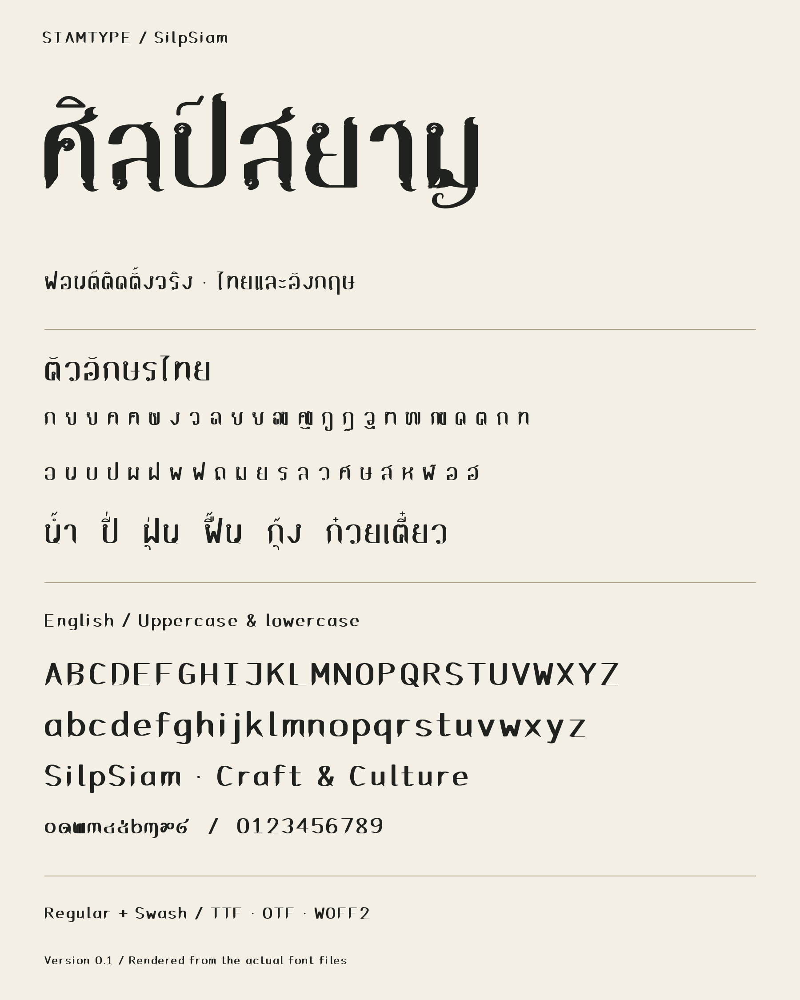

ศิลป์สยาม
เส้นหนาบาง หัวขด และจังหวะตัวอักษรไทย สำหรับหัวเรื่อง ป้าย และงานตกแต่ง พร้อมภาษาอังกฤษตัวเล็กจริง
ดาวน์โหลด Regular ฟรีลองพิมพ์ Regular
ชุดฟรี Regular
ได้ไฟล์ฟอนต์ 3 รูปแบบ พร้อมคู่มือติดตั้ง ใช้ได้ทั้งงานส่วนตัวและงานออกแบบเชิงพาณิชย์ตามเงื่อนไขที่แนบ
รับไฟล์ฟอนต์ฟรีภาพตัวอย่างด้านล่างแสดงทั้ง Regular และแบบประดับ Swash ชุดดาวน์โหลดฟรีประกอบด้วย Regular

ติดตั้งอย่างไร?
แตกไฟล์ ZIP แล้วเปิดโฟลเดอร์ fonts บน Windows ให้คลิกขวาที่ไฟล์ TTF แล้วเลือก Install ส่วน macOS เปิดไฟล์ด้วย Font Book แล้วเลือก Install Font
ติดตั้ง TTF หรือ OTF อย่างใดอย่างหนึ่ง จากนั้นปิดและเปิดโปรแกรมออกแบบใหม่ ค้นหาชื่อ SIAMTYPE SilpSiam Regular
ที่มาและขอบเขตการทดสอบ
พัฒนาจากโครงเวกเตอร์ของ SIAMTYPE โดยนำทิศทางภาพร่างมาปรับเป็นระบบฟอนต์สำหรับพิมพ์ข้อความ ไม่ได้คัดลอกเส้นหรือไฟล์ฟอนต์จากภาพอ้างอิงของผู้อื่น
ตรวจจัดวางด้วย HarfBuzz 1,775 ข้อความต่อไฟล์ TTF/OTF และตรวจภาพจากฟอนต์จริง ยังไม่ได้ทดสอบใน Adobe, Office หรือ Canva ควรลองข้อความที่จะใช้งานก่อนผลิตจริง